Bitcoin kroz vrijeme: volatilnost, trend i ulaganje
Nakon ravnoteže imovine dolazi pitanje vremena.
Proračun pokazuje što sadašnji novac treba napraviti. Dug pokazuje koliko je budućnosti već zauzeto. Davanje otvara novac prema drugima. Ravnoteža imovine pokazuje gdje je vrijednost smještena: u novcu, potrošnim dobrima ili proizvodnoj imovini. Ali Bitcoin se ne može razumjeti samo kroz sadašnje stanje bilance. Bitcoin se mora gledati kroz vrijeme.
To je jedna od najtežih stvari.
Današnja cijena je jasna. Možete je otvoriti na ekranu i vidjeti u sekundi. Cijena je konkretna, emocionalna i stalno dostupna. Ako raste, lako je osjećati da se budućnost ubrzava. Ako pada, lako je osjećati da se nešto pokvarilo. Ako se dugo ne miče, lako je osjećati da vrijeme prolazi bez rezultata.
Ali Bitcoin nije samo današnja cijena.
Bitcoin je novac u procesu monetizacije. To znači da ga kroz vrijeme sve više ljudi, obitelji, poduzeća, investitora, institucija i možda jednog dana država počinje razumijevati kao novac. Taj proces nije ravan. Nije uredan. Nije lišen pretjerivanja, straha, euforije, razočaranja, političkih reakcija, tehničkog nerazumijevanja i tržišnih ciklusa. Tržište ne otkriva vrijednost novog novca mirno. Ono je otkriva kroz valove.
Zato osoba koja želi živjeti s Bitcoinom kao novcem mora naučiti razlikovati šum od smjera.
Kratkoročna cijena može biti vrlo bučna. Dugoročni smjer može biti puno mirniji, iako se nikada ne vidi savršeno. Ako gledate samo današnju cijenu, Bitcoin će vas stalno emocionalno pomicati. Ako gledate samo dugoročnu tezu, možete zanemariti stvarne rizike i vlastitu likvidnost. Potrebno je oboje: razumjeti dugoročni trend, ali živjeti u stvarnom proračunu; vjerovati u bolji novac, ali ne izgubiti trezvenost; znati da Bitcoin može rasti u kupovnoj moći, ali ne donositi odluke kao da sutrašnji rast već pripada današnjem proračunu.
Zato ovo poglavlje ne pokušava pogoditi cijenu. Pokušava usporiti pogled.
Treba naučiti gledati Bitcoin kroz vrijeme, a ne samo kroz trenutnu cijenu. Treba pokazati da volatilnost nije zapovijed, nego informacija o stanju iz kojeg odlučujete. I treba objasniti ulaganje na Bitcoin standardu: ako je Bitcoin novac, ulaganje više ne znači samo tražiti veći iznos u eurima, nego privremeno ili trajno premjestiti dio Bitcoina u rizik proizvodne imovine samo kada za to postoji dovoljno dobra teza.
To je potpuno drugačiji početak od onoga na što nas državni novac navikava.
U državnom novcu ljudi često osjećaju da novac mora stalno “raditi”, jer novac koji stoji gubi kupovnu moć. Na Bitcoin standardu taj pritisak se smanjuje. Ako je Bitcoin vaš novac, držanje novca nije prazna odluka. To je držanje opcionalnosti u novcu koji se još uvijek monetizira. Zato investicija mora zaslužiti mjesto u bilanci. Nije dovoljno da zvuči zanimljivo. Nije dovoljno da drugi ljudi zarađuju. Nije dovoljno da se bojite da propuštate priliku.
Na Bitcoin standardu svaka ozbiljna investicija mora odgovoriti na pitanje: zašto je ovo bolje od držanja najboljeg novca koji poznajem?
Zašto Bitcoin treba gledati kroz vrijeme?
Bitcoin je od nastanka prošao put koji je teško smjestiti u uobičajene financijske kategorije. Nije počeo kao dionica, tvrtka, obveznica, startup ili fond. Nije imao upravu, tržišni odjel, prodajni tim, sjedište, državu koja stoji iza njega ili središnju banku koja ga brani. Počeo je kao otvoreni protokol, objavljen svijetu, koji je spajao kriptografiju, računalne mreže, dokaz rada, ograničenu ponudu i ideju novca bez središnjeg izdavatelja.
Prvi ljudi koji su ga koristili nisu mogli znati kako će ga svijet vrednovati. Ni danas nitko ne zna točno kako će izgledati njegova puna monetizacija, ako do nje dođe. Ali sada već imamo dovoljno dugu povijest da vidimo jednu stvar: Bitcoin se kroz vrijeme nije ponašao kao obična kratkoročna špekulacija. Imao je duboke padove, ali se nakon njih vraćao s većom mrežom, većom likvidnošću, većim razumijevanjem i većom cijenom izraženom u državnom novcu.
To ne znači da se budućnost mora ponoviti.
Ali znači da današnju cijenu ne treba gledati izolirano.
Cijena Bitcoina je tržišni pokušaj da se u jednom trenutku izrazi vrijednost nečega što se monetizira globalno, pod fiksnom ponudom i promjenjivom potražnjom. Ako mali broj ljudi razumije Bitcoin, cijena može biti jedna. Ako ga razumije stotine milijuna ljudi, druga. Ako ga počnu koristiti obitelji, poduzeća, fondovi, gradovi ili države, treća. Ako dio svijeta u njemu počne mjeriti imovinu, dug, rad, štednju i ulaganje, tada se mijenja sama funkcija cijene.
Zato rast Bitcoina ne treba zamišljati kao ravnu crtu. To bi bilo psihološki ugodno, ali tržišno nerealno. Kada se nova monetarna imovina širi, ljudi je ne razumiju svi odjednom. Ulaze u valovima. Prvo je ignoriraju, zatim joj se rugaju, zatim je dio ljudi kupuje iz znatiželje, zatim je neki kupuju iz pohlepe, zatim mnogi odustaju, zatim se vraćaju oni koji razumiju više, zatim dolazi nova skupina, zatim nova euforija, pa novo razočaranje. I tako kroz cikluse.
U tim ciklusima događaju se dvije stvari.
Prva je stvarni napredak: više korisnika, bolja infrastruktura, veće razumijevanje, bolji alati, ozbiljnije skrbništvo, veći kapital, veća politička i društvena vidljivost.
Druga je psihološka pretjeranost: cijena ponekad ode ispred stvarnog razumijevanja, a ponekad padne ispod dugoročnog trenda jer tržište postane prestrašeno, umorno ili prezasićeno prethodnom euforijom.
Zato čovjek treba okvir koji mu pomaže vidjeti širu sliku.
Za početak ne trebamo formulu. Trebamo samo jednu ideju: cijena kroz vrijeme ima kratkoročne valove i dugoročniji smjer. Taj smjer možemo nacrtati kao crtu trenda. Ona ne govori što će se dogoditi sutra. Ona samo pomaže da današnju cijenu ne čitamo izvan povijesnog konteksta.
Osnovna intuicija je važnija od zapisa: Bitcoinova cijena se kroz povijest kretala oko dugoročnog obrasca, uz velike odmake iznad i ispod njega. Ponekad je tržište daleko ispred trenda. Ponekad je iza. Ponekad je blizu. Model nam ne treba da bismo pogodili cijenu. Treba nam da današnju cijenu ne čitamo kao cijeli svijet.
Logaritamski graf pomaže da taj odnos uopće vidimo. Na običnom grafu veliki rast pojede sve ranije razlike. Rani dio grafa izgleda kao ravna crta pri dnu, a kasniji veliki brojevi preuzmu cijelu stranicu.
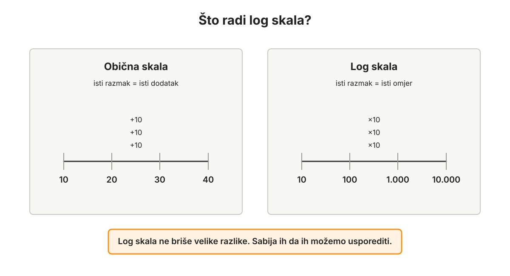
Log-log graf znači da su obje osi prikazane na log skali: i vrijeme i cijena. Takav graf ne služi tome da Bitcoin izgleda bolje, nego da se vrlo velik raspon vremena i cijena može vidjeti na jednoj stranici. Na log-log grafu dugoročni obrazac može izgledati kao ravnija linija oko koje se tržište udaljava i vraća. Ne morate znati računati logaritme da biste razumjeli poantu: log skala stisne vrlo velike razlike da ih možemo usporediti. Ta linija nije zapovijed. Ona je karta.
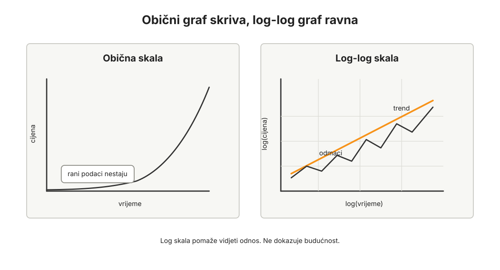
Tu dolazimo do potencijskog zakona. Potencijski zakon je odnos u kojem se jedna veličina mijenja kao potencija druge veličine. Jednostavnije: ne dodaje se uvijek isti iznos, nego se odnos mijenja u omjerima. Zato power-law odnos na log-log grafu može izgledati kao ravnija linija.
Teorijska pozadina tog načina gledanja nije nastala zbog Bitcoina. Geoffrey West u knjizi Scale popularizira širu ideju da mnogi biološki, gradski i društveni sustavi pokazuju zakone skaliranja. Giovanni Santostasi tu je intuiciju primijenio na Bitcoin kroz svoju Bitcoin Power Law Theory: cijenu, hash rate i adrese promatra kao povezane power-law odnose kroz vrijeme. To je korisna teorijska pozadina, ali ova knjiga ne treba preuzeti sav njegov prediktivni jezik. Power-law okvir ne dokazuje da se Bitcoin mora monetizirati; on samo opisuje kako je tržište do sada vrednovalo Bitcoin ako ga gledamo kroz određenu matematičku leću.
U ovoj knjizi, kada govorimo o dugoročnom trendu, radni okvir je block-time pogled inspiriran Leo Heartovim, odnosno leoumovim, Bitcoin Rainbow Wave modelom i njegovim chartovima na bitcoinwave.net. To ne znači da je Leo Heart autor ove knjige, niti da se njegov model koristi kao signal za trgovanje. To znači samo da Bitcoinov dugoročni trend ne gledamo isključivo kroz kalendarske dane, nego i kroz vlastiti interni sat mreže.
Bitcoin ne mjeri svoje monetarno vrijeme kalendarom, nego blokovima. Kalendar i dalje postoji za plaću, režije, porez, školu, sezonu i obiteljski život. Ali protokol diše u blokovima. Prvo gledamo gdje se Bitcoin nalazi u vlastitom halving ritmu. U block-time okviru osnovna varijabla može se zapisati ovako:
h = visina bloka / 210 000
Drugim riječima: broj do sada izrudarenih blokova dijeli se s 210 000, brojem blokova između dva halvinga. Svaki cijeli broj h označava jedan halving ciklus. Decimalni dio pokazuje koliko je Bitcoin napredovao prema sljedećem halvingu. Ako je broj blokova oko 840 000, tada je h = 4. Ako je oko 945 000, tada je h = 4,5, otprilike pola ciklusa kasnije. Blokovi nisu savršeno ravnomjerni u kalendarskom vremenu, ali su Bitcoinov vlastiti ritam izdavanja novog novca. Taj broj ne vodi vaš kućni budžet; on samo pokazuje gdje je mreža u svom protokolarnom vremenu.
Razlog za korištenje blokova nije samo estetski. Kod modela koji koriste dane od Genesis Blocka, rani dani Bitcoina mogu nositi drukčiju težinu jer blokovi 2009. nisu nastajali jednoliko kao kasnije. Block-time model zato pokušava mjeriti Bitcoin prema onome što protokol stvarno broji: blokovima i halving ritmu. To ne znači da kalendarsko vrijeme nije važno. Cijena i dalje nastaje na tržištu ljudi, kapitala, regulacije, likvidnosti i očekivanja. Blokovi su prirodnija os za Bitcoinov monetarni ritam, ali nisu čarobni ključ budućnosti.
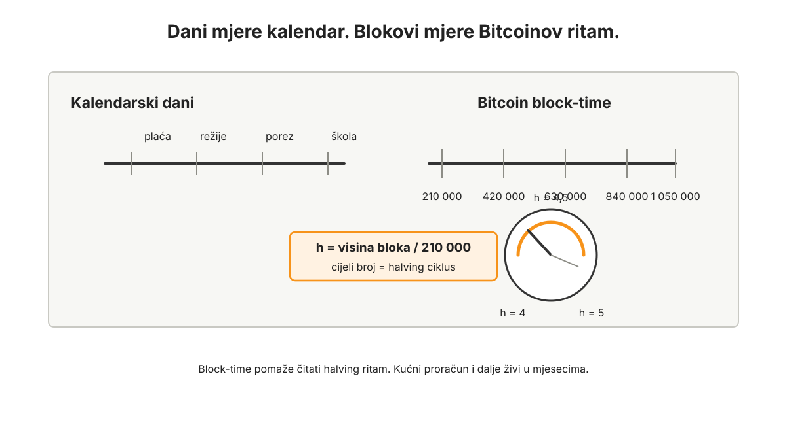
Za odluke u ovoj knjizi nije važno ručno računati power-law formulu. Važno je razumjeti odnos cijene prema trendu. Ako je trend 100, a tržišna cijena 130, cijena je 30% iznad trenda. Ako je trend 100, a tržišna cijena 70, cijena je 30% ispod trenda. Nijedno ni drugo nije naredba. To je samo kontekst.
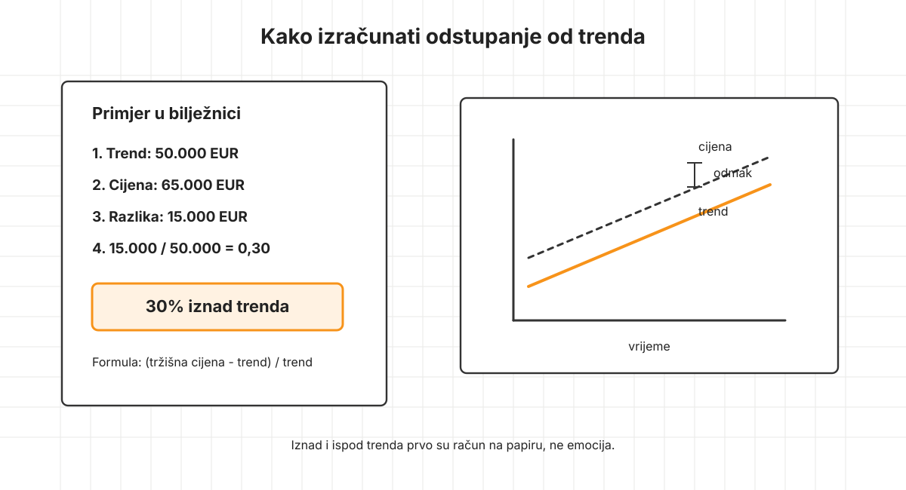
Za tehnički znatiželjne, u najjednostavnijem obliku power-law model kaže da se cijena uspoređuje s izrazom tipa BTC(h) = 10^a * h^b. U log obliku to postaje ravnija jednadžba: log10(BTC) = a + b * log10(h). Ne morate ovo računati da biste proveli poglavlje. Parametri a i b nisu vječni. U javnim verzijama Leo Heartova modela pojavljuju se različiti datirani parametri, pa bi svaku konkretnu brojku trebalo vezati uz točan izvor, datum, verziju modela i izvor podataka.
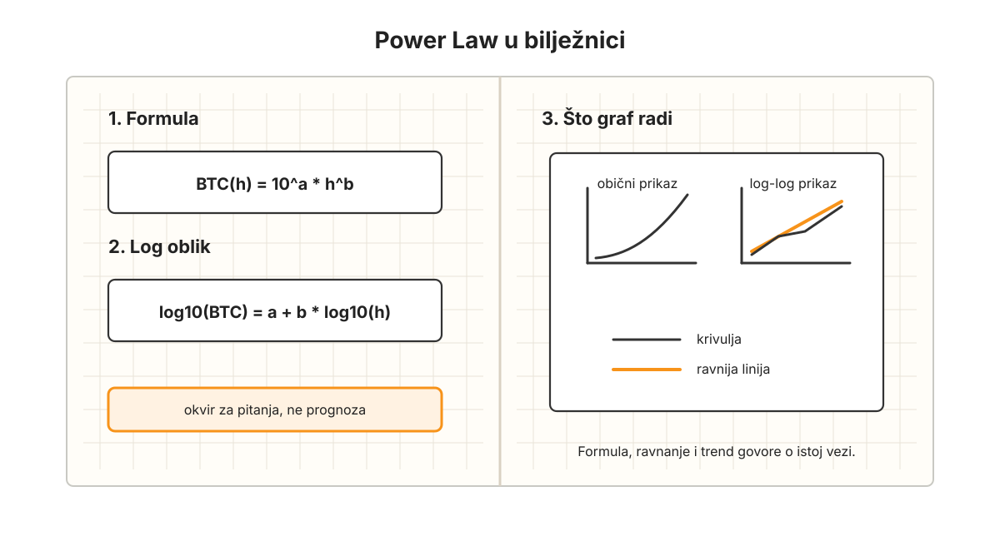
R² u ovakvom modelu govori koliko se povijesna cijena dobro uklopila u odabranu matematičku formu, najčešće nakon log-transformacije. Ne govori kolika je vjerojatnost da će se budućnost dogoditi po modelu. Visok R² može objasniti zašto model vrijedi ozbiljno pogledati, ali ne može umjesto vas platiti režije, zatvoriti dug, razgovarati sa supružnikom ili izdržati pad cijene.
Što model ima više prilagodbi, valova, zona i parametara, to više treba paziti na overfitting: mogućnost da model dobro opisuje prošlost upravo zato što je naknadno prilagođen prošlosti. Za ozbiljniju upotrebu modela nije dovoljno pitati koliki mu je R² na prošlim podacima. Treba pitati koliko su parametri stabilni kroz vrijeme i kako se model ponašao na podacima koji nisu služili za njegovo podešavanje.
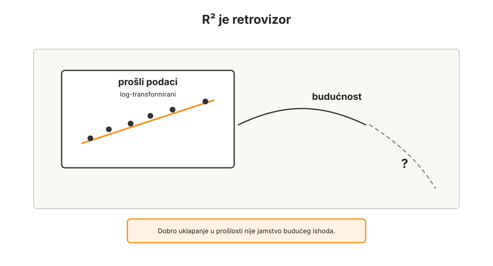
Santostasijev days-since-genesis pristup ima snagu u jednostavnosti: uzima kalendarsko vrijeme od Genesis Blocka i pokazuje dugoročnu power-law intuiciju. Leo Heartov block-based pristup mijenja vremensku os: umjesto dana koristi blokove normalizirane s 210 000 blokova po halving ciklusu, pa je prirodniji za cycle-aware čitanje halving ritma. U ovoj knjizi ta dva pristupa ne treba prikazati kao neprijatelje. Santostasi je koristan za ultra-jednostavnu dugoročnu intuiciju, a Leo Heart za block-time i ciklički okvir. Za ovu knjigu važnija je praktična upotreba od rasprave koji je model elegantniji: trend je orijentir za bolja pitanja, ne stroj za predviđanje cijene.
Ako neki javni alat prikazuje obojene zone, valove, vrhove, dna ili "no-miss" područja, ova knjiga ih ne koristi kao sigurne kupi/prodaj signale. Koristi ih samo kao povijesne zone odstupanja koje mogu pomoći postaviti bolja pitanja. Model može pomoći da usporite pogled. Ne može ukloniti rizik pogrešne odluke.
[NAPOMENA ZA IZVORE: prije završne objave datirati korišteni power-law model i navesti izvor, primjerice Giovanni Santostasi, "The Bitcoin Power Law Theory", Leo Heart / leoum, Bitcoin Rainbow Wave na TradingViewu i bitcoinwave.net, te Geoffrey West, Scale. Ako se spominju R², nagib, intercept, tržišna cijena ili projekcija, svaku brojku vezati uz točan datum, uzorak, formulu i verziju modela.]
To nije kristalna kugla.
Dugoročni trend nije obećanje, ne uklanja rizik i ne govori točno što će cijena napraviti sljedeći mjesec ili sljedeće godine. Može se promijeniti, pokazati nepotpunim ili izgubiti korisnost. Ali može pomoći da današnju cijenu ne doživimo kao samostalnu dramu.
Kad je Bitcoin iznad dugoročnog trenda, ne dobivate nalog za prodaju. Dobivate razlog za mirniji pregled bilance. Kad je ispod trenda, ne dobivate nalog za kupnju. Dobivate razlog da provjerite postoji li stvarni višak i je li sustav dovoljno stabilan. Kad je blizu trenda, odluka nije automatski laka. Cijena je samo manje ekstremna u odnosu na povijesni obrazac.
U svim slučajevima, trend ne odlučuje umjesto vas.
On samo dodaje kontekst.
Taj kontekst možemo nazvati vremenski odmak. Ako je cijena daleko iznad trenda, možemo reći da tržište živi ispred dugoročnog ritma. Ako je daleko ispod, možemo reći da tržište zaostaje za dugoročnim ritmom. Ali taj jezik ne smije postati naredba. "Ispred trenda" ne znači prodaj sve. "Iza trenda" ne znači kupuj sve. Znači samo da današnju cijenu treba čitati sporije, u odnosu na proračun, dug, davanje, ravnotežu imovine i sigurnost.
Ako model kaže da je današnja tržišna cijena slična razini koju bi trend pokazivao tek za, primjerice, godinu dana, to ne znači da je tržište "pogriješilo" niti da treba prodati. To samo kaže da je cijena ispred dugog ritma i da veće odluke treba dodatno ohladiti. Ako je cijena na razini koju je trend pokazivao prije godinu dana, to ne znači da je kupnja sigurna. To samo kaže da je tržište iza ritma i da prvo treba provjeriti stvarni višak, dug i likvidnost.
Kako donositi odluke kada je Bitcoin iznad, blizu ili ispod trenda?
Dugoročni trend ne smije postati mehaničko pravilo, ali može biti koristan orijentir. Praktično gledano, postoje tri osnovna stanja: Bitcoin je iznad dugoročnog trenda, blizu njega ili ispod njega.
Kada je Bitcoin znatno iznad dugoročnog trenda, tržište možda unaprijed cijeni budući rast. To je trenutak za trezveniji pregled, ne za automatsku prodaju. Ako je rast Bitcoina učinio da je novčani dio imovine znatno veći od planiranog, možete razmotriti što taj rast omogućuje: unaprijed riješiti stvarne buduće troškove, ojačati sigurnost, povećati davanje, smanjiti preostale obveze, ulagati u vlastitu produktivnost, pomoći djeci ili roditeljima, ili jednostavno ne raditi ništa.
Važno je da odluka ne nastane iz euforije.
Rast ne opravdava svaki trošak i ne čini svaku investiciju dobrom. Budući dobici još nisu vaši. Rast samo otvara dodatnu mogućnost pregleda. Tko ima sustav, može ga iskoristiti za bolju ravnotežu. Tko nema sustav, često ga iskoristi za povećanje potrošnje i rizika.
Kada je Bitcoin blizu dugoročnog trenda, često nema potrebe za velikim odlukama. To je prostor običnog rada: voditi proračun, davati, graditi likvidnost, kupovati Bitcoin iz stvarnog viška, povećavati znanje, raditi na poslu, čuvati sigurnost i pregledavati imovinu. Većina života odvija se upravo u ovakvim razdobljima. Ona nisu dramatična, ali su presudna. Čovjek ne gradi Bitcoin standard samo u vrhovima i padovima, nego u normalnim mjesecima u kojima odluke djeluju male.
Kada je Bitcoin znatno ispod dugoročnog trenda, tržište možda podcjenjuje budući rast. Tu je najopasnije pomiješati dobru cijenu s dozvolom za nered. Čak i kada je Bitcoin ispod izabranog modela, to ne znači da je podcijenjen u investicijskom smislu. Znači samo da je ispod jednog povijesno uklopljenog okvira koji se može pokazati pogrešnim, nepotpunim ili neprimjenjivim u novom tržišnom režimu. Novac za režije, porez, hranu, djecu i dogovorene buduće troškove ne postaje slobodan samo zato što model izgleda povoljno. Kupnja iz unaprijed planiranog stvarnog viška može biti posebno vrijedna. Kupnja iz pritiska samo vraća čovjeka u isti nered iz kojeg je knjiga pokušala izaći.
Razlika nije samo u tržištu.
Razlika je u stanju čovjeka.
Zato ova knjiga stalno vraća na isti temelj: proračun, dug, davanje, ravnoteža imovine, trend, ulaganje i sigurnost nisu odvojene teme. One zajedno oblikuju stanje iz kojeg odlučujete.
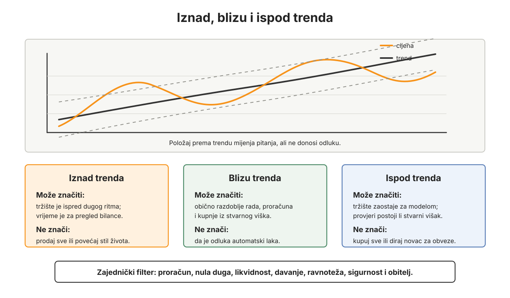
Dugoročni trend nije dopuštenje za kratkoročni nered
Dugoročni trend ne smije služiti kao izgovor za kratkoročni nered. Ako vam model kaže da Bitcoin ima velik potencijal, to ne znači da smijete preskočiti proračun, odgoditi razduživanje, povećati potrošnju ili koristiti polugu. Što je dugoročna teza snažnija, to osobni sustav mora biti zreliji.
Trend, potencijski zakon, očekivani rast i monetizacija mogu pomoći da se današnja cijena stavi u širi kontekst. Ne smiju postati dopuštenje da kratkoročni život postane neuredan. Najbolja dugoročna teza ne spašava čovjeka koji je svoju likvidnost, obitelj i odluke predao nestrpljenju.
Ako vam je za "iskoristiti trend" potreban novi dug, poluga ili novac koji pripada obvezama, to nije provedba ovog poglavlja. To je povratak na poglavlje o dugu.
Volatilnost kao test stanja
Volatilnost sama po sebi nije neprijatelj.
Ona je promjena cijene kroz vrijeme. Može biti neugodna, ali nije moralno loša. Problem nastaje kada čovjek živi u stanju iz kojeg volatilnost upravlja njegovim odlukama. Ako nema proračun, ako ima dug, ako ne zna stvarni višak, ako je imovina neravnotežna, ako su budući troškovi nepripremljeni, ako davanje nije uređeno i ako sigurnosni plan ne postoji, svaka veća promjena cijene Bitcoina postaje emocionalni događaj.
Rast tada lako stvara nestrpljenje.
Pad tada lako stvara strah.
Dugo razdoblje bez jasnog smjera tada lako stvara dosadu i sumnju.
Ali kada postoji sustav, volatilnost mijenja funkciju. Ona ne nestaje, ali prestaje biti zapovijed. Postaje informacija.
Ako Bitcoin snažno raste, lako je u glavi već potrošiti dobitak koji još nije prošao kroz proračun. Tada prvo pitanje nije: što sada mogu kupiti? Prvo pitanje je: što se stvarno promijenilo u mojoj bilanci, likvidnosti, davanju, obiteljskim ciljevima i sigurnosti?
Ako Bitcoin snažno pada, lako je osjetiti da je cijeli plan pogrešan. Tada prvo pitanje nije: jesam li pogriješio? Prvo pitanje je: jesu li kratkoročne potrebe pokrivene, postoji li dug i je li pad cijene problem za moj stvarni život ili samo za moj osjećaj?
Ako se Bitcoin dugo ne miče, lako je tražiti dramu samo zato što je nema. Tada prvo pitanje nije: zašto se ništa ne događa? Prvo pitanje je: koristim li ovo vrijeme dobro, vodim li proračun, stvaram li vrijednost, dajem li, poboljšavam li sigurnost i odnos s obitelji?
Cijena ne zna vaš život.
Ne zna vaš prihod, djecu, posao, dugove, buduće troškove, brak, zdravlje, obiteljske obveze ni sposobnost podnošenja rizika. Cijena je tržišna informacija. Ne smije postati osobna presuda.
Zato je najvažnije pitanje kod volatilnosti: u kakvom me stanju ova promjena cijene zatiče?
Ako vas rast zatiče bez proračuna, može vas učiniti neopreznim. Ako vas pad zatiče u dugu, može vas učiniti paničnim. Ako vas stagnacija zatiče bez smisla i rada, može vas učiniti nestrpljivim. Ali ako vas volatilnost zatiče u uređenom sustavu, ona može biti korisna. Pokazuje vam gdje je bilanca napeta, gdje je likvidnost slaba, gdje je davanje premalo, gdje je koncentracija prevelika, gdje se javlja pohlepa i gdje se javlja strah.
Volatilnost ne stvara karakter. Ona ga otkriva.
Trošiti Bitcoin nije problem
Jedna od najopasnijih zabluda u životu s Bitcoinom jest da je svaka prodaja ili potrošnja Bitcoina problem.
Ta zabluda nastaje iz stvarne činjenice: Bitcoin dugoročno može rasti u kupovnoj moći. Ako ga potrošite danas, možda ćete za deset godina gledati na taj iznos i reći da je mogao vrijediti mnogo više. To je stvaran oportunitetni trošak. Ne treba ga ignorirati.
Ali oportunitetni trošak nije zabrana.
Ako je Bitcoin novac, onda postoji da bi se koristio. Novac se čuva, troši, daje, ulaže, razmjenjuje i prenosi kroz vrijeme. Ako novac nikada ne smijete upotrijebiti, tada ga ne tretirate kao novac, nego kao predmet straha. To nije osobni Bitcoin standard. To je nova vrsta zarobljenosti.
Nije problem potrošiti Bitcoin.
Problem je potrošiti ga iz lošeg stanja.
Ako je proračun jasan, dug uklonjen, davanje prisutno, imovina uravnotežena, a odluka promišljena, potrošnja Bitcoina može biti potpuno zdrava. Možete ga upotrijebiti za zdravlje, dom, obrazovanje, preseljenje, posao, opremu, putovanje, pomoć drugome, ulaganje ili bilo koju drugu odluku koja u vašem životu ima smisla. Pitanje nije smije li se Bitcoin potrošiti. Pitanje je što odluka radi vašem životu, bilanci i budućoj sposobnosti odlučivanja.
Ako pak Bitcoin trošite zato što ste ignorirali buduće troškove, zadržali dug, držali svu imovinu u nelikvidnim stvarima, živjeli iznad mogućnosti ili koristili Bitcoin kao hitnu blagajnu za neuređen život, tada problem nije u tome što ste prodali Bitcoin. Problem je u stanju koje je proizvelo prisilu.
Ovo treba jasno razlikovati.
Osobni Bitcoin standard ne postoji zato da bi čovjek čuvao Bitcoin pod svaku cijenu. Postoji zato da bi Bitcoin mogao koristiti kao novac iz sve boljeg stanja. Ako je odluka dobra, prodaja ili potrošnja Bitcoina može biti dio mudrog života. Ako je odluka loša, ni čuvanje Bitcoina neće je automatski učiniti dobrom.
Dobar novac ne oslobađa od rasuđivanja.
Dobar novac povećava važnost rasuđivanja.
Prvi potezi
Trend ne treba provjeravati za svaku sitnicu. Ako odluka ne mijenja životnu sliku, ne treba joj modelska drama. Kao praktičan prag možete koristiti jednu šezdesetinu neto imovine. To je samo neto imovina / 60: iznos kod kojeg zastajemo i provjeravamo širu sliku. Ako neto imovina iznosi 60.000 eura, to je 1.000 eura. Ako iznosi 120.000 eura, to je 2.000 eura. Prag se može prilagoditi, ali poanta ostaje: veće odluke traže hladniju provjeru. Jedna šezdesetina nije sveta brojka. To je obrazovni filter, ne osobno investicijsko pravilo.
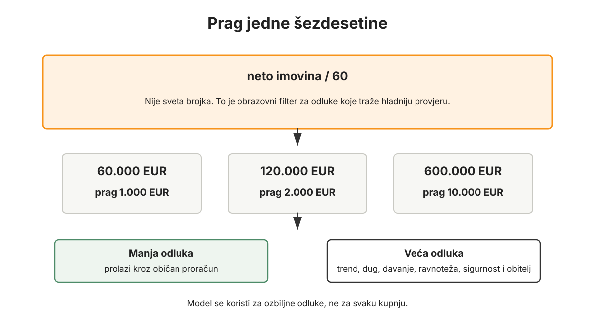
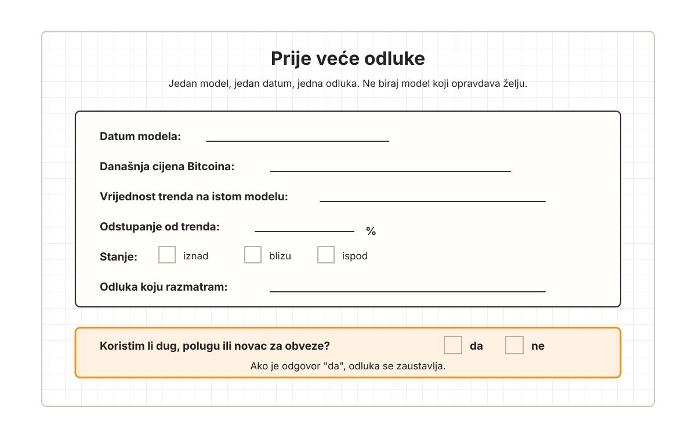
Prije nego što donesete novu veću odluku o Bitcoinu, zapišite gdje se Bitcoin nalazi u odnosu na dugoročni trend: znatno iznad, blizu ili znatno ispod. Koristite isti unaprijed odabrani model, a ne onaj koji tog dana najbolje opravdava željenu odluku. Ne morate pogoditi savršenu granicu. Dovoljno je da današnju cijenu prestanete gledati kao samostalnu zapovijed.
Zatim zapišite što to stanje znači za vaše ponašanje, ne što vam tržište "jamči". Ako je Bitcoin iznad trenda, prvo pitanje je što rast radi vašoj bilanci, davanju, sigurnosti i koncentraciji. Ako je ispod trenda, prvo pitanje je imate li stvarni višak za kupnju bez ugrožavanja obveza. Ako je blizu trenda, prvo pitanje je vodite li obične mjesece dovoljno dobro.
Ni u jednom stanju ne koristite dug, polugu, novac za režije, novac za porez, novac za hranu, novac za djecu ili novac za dogovorene buduće troškove. Ako odluka traži takav novac, to nije odluka o Bitcoinu. To je povratak na nered iz ranijih poglavlja.
Svaku veću investiciju usporedite s držanjem Bitcoina. Napišite koliko Bitcoina premještate, koliko Bitcoina očekujete natrag, u kojem roku, uz koji rizik i koliko vašeg vremena će to pojesti. Ako to ne možete napisati običnim jezikom, investicija još nije zrela. Čekanje je dopušteno.
Ovaj okvir nije osobni financijski savjet. Ne zna vašu obitelj, poreze, posao, zdravlje, psihologiju, obveze ni sigurnosni plan. Njegova je svrha usporiti odluku i postaviti bolja pitanja.
Okvir za tri stanja
Iznad trenda: usporite. Pregledajte ravnotežu imovine, davanje, sigurnost, buduće troškove i obiteljske ciljeve. Rast nije dopuštenje za veći životni stil.
Blizu trenda: radite običan posao. Vodite proračun, kupujte iz stvarnog viška, povećavajte sposobnost zarade, učite i ne tražite dramu gdje je nema.
Ispod trenda: provjerite jeste li stvarno spremni. Ako nema duga, ako proračun diše i ako unaprijed planirani višak postoji, pad može biti prostor za strpljivu kupnju. Ako sustav ne postoji, pad nije prilika nego test koji će otkriti slabost.
Ulaganje na Bitcoin standardu
Na državnom novcu ulaganje često počinje iz pritiska.
Čovjek zna da novac gubi kupovnu moć. Ako drži štednju, osjeća da zaostaje. Ako cijene nekretnina rastu, osjeća da mora kupiti. Ako dionice rastu, osjeća da mora sudjelovati. Ako čuje za novu priliku, boji se da će zakasniti. U takvom okruženju ulaganje često nije samo stvaranje vrijednosti, nego bijeg od novca koji propada.
Bitcoin mijenja početnu točku.
Ako je Bitcoin vaš novac, držanje novca nije prazno čekanje. Bitcoin može čuvati opcionalnost i kroz monetizaciju rasti u kupovnoj moći. Zato proizvodna imovina mora zaslužiti svoje mjesto. Investicija mora objasniti zašto je bolja od držanja novca.
Proizvodna imovina i dalje ima mjesto. Posao, alati, znanje, oprema, sustavi, dobri projekti i kapital koji stvara vrijednost mogu biti iznimno korisni. Ali na Bitcoin standardu ulaganje mora biti jasnije nego na fiat standardu. Ne ulaže se zato što novac “mora raditi”. Bitcoin već radi jednu važnu stvar: čuva mogućnost odluke. Ulaže se onda kada postoji dovoljno dobra teza da će ulaganje stvoriti više kupovne moći nego držanje Bitcoina.
Bitcoin može biti glavno novčano mjerilo ove knjige, ali to ne znači da svaka druga imovina radi isti posao lošije. Neke alternative mogu bolje služiti kratkom roku, regulatornoj jednostavnosti, prihodu, diverzifikaciji ili obiteljskom miru. Pitanje nije treba li ih prezirati. Pitanje je koju ulogu stvarno imaju u bilanci i mogu li opravdati rizik, vrijeme i složenost koju traže.
Glavno pitanje zato glasi:
Ako uložim Bitcoin, koliko Bitcoina očekujem natrag, u kojem roku i uz koji rizik?
Ako ulažete jedan Bitcoin u posao, dionicu, fond, opremu, zemljište, udio u projektu ili bilo koju drugu investiciju, ne pitate samo koliko će to vrijediti u eurima. Pitate hoćete li nakon tri, pet ili deset godina imati više kupovne moći izražene u Bitcoinu nego da ste taj Bitcoin držali. Ako je odgovor nejasan, investicija možda nije dovoljno jasna. Ako je odgovor da, treba znati zašto.
Isto vrijedi i za male iznose. Ako uložite 0,01 BTC, pitanje nije samo koliko će to vrijediti u eurima. Pitanje je hoćete li nakon vremena, rizika, poreza, naknada i uloženog truda imati više od 0,01 BTC vrijednosti. Tako Bitcoin postaje mjerna letvica, a ne samo imovina na grafu.
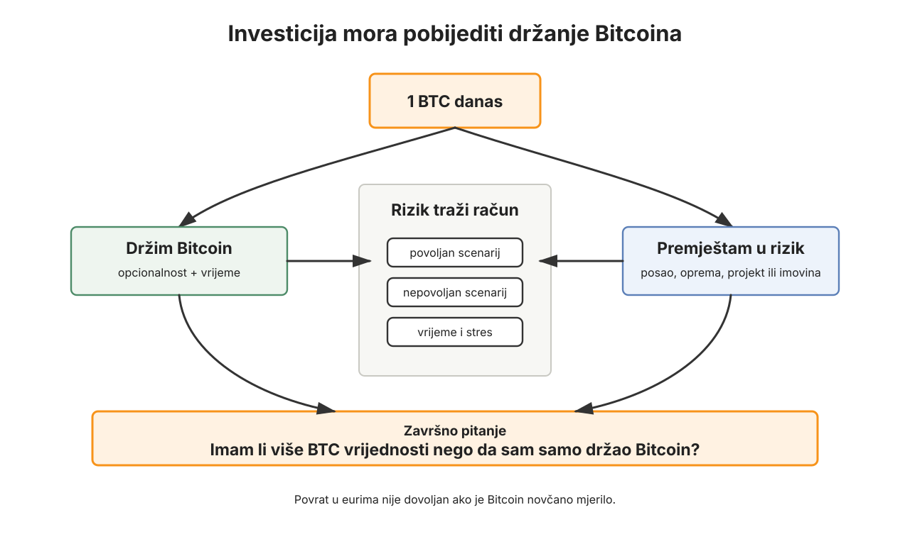
Tu počinje investicijska teza. Ne mora biti duga. Mora biti poštena.
Teza je pokušaj da prije ulaganja napišete zašto ulažete, što očekujete i što bi pokazalo da ste u krivu. Ima dva sloja. Prvi je razumijevanje: što točno kupujem, koji problem ta imovina rješava i zašto bi netko za tu vrijednost plaćao. Drugi je mjera: koliko Bitcoina premještam, koliko Bitcoina očekujem natrag, u kojem roku i uz koji rizik.
Bez kvalitativnog dijela investicija je broj bez razumijevanja.
Bez kvantitativnog dijela investicija je priča bez mjere.
Ako uložite 0,01 BTC i očekujete da ćete za nekoliko godina imati 0,012 BTC vrijednosti, očekujete dobit od 0,002 BTC prije vremena, rizika, poreza i naknada. Ako uložite 1 BTC i očekujete da ćete za pet godina imati 1,5 BTC vrijednosti, očekujete povrat od 0,5 BTC. Ali ni to nije dovoljno. Morate znati zašto mislite da je to moguće, što se mora dogoditi u stvarnosti, kakav je rizik, koliko vremena morate potrošiti i kakav bi oportunitetni trošak mogao nastati ako Bitcoin u istom razdoblju nastavi monetizaciju. To nije pokušaj pogađanja cijene, nego test: je li investicija dovoljno dobra i ako novac koji napuštate nastavi jačati?
Ako u državnom novcu investicija izgleda dobro, a u Bitcoinu izgleda loše, tada na Bitcoin standardu nije dobra investicija.
Ovo je kratko za reći, ali traži promjenu navike.
Gdje je Bitcoin u odnosu na dugoročni trend?
Prije ozbiljne investicije treba pogledati gdje se Bitcoin nalazi u odnosu na dugoročni trend. Ovdje ne ponavljamo tri stanja zato da bismo dobili drugi kupi/prodaj signal, nego zato da bismo izmjerili oportunitetni trošak izlaska iz Bitcoina.
Ako je Bitcoin daleko ispod trenda, držanje Bitcoina postaje vrlo zahtjevno mjerilo. U takvom razdoblju investicija mora biti posebno uvjerljiva da bi imalo smisla premjestiti Bitcoin u drugi rizik. Ne zato što model zna budućnost, nego zato što je oportunitetni trošak izlaska iz Bitcoina drugačiji. Nije nemoguće. Možda imate vlastiti posao s iznimno jasnim povratom. Možda imate opremu koja odmah povećava prihod. Možda imate projekt koji razumijete bolje od tržišta. Ali prag je visok.
Ako je Bitcoin daleko iznad trenda, djelomično preusmjeravanje može biti lakše opravdati. Možda je mudro financirati buduće troškove, davanje, sigurnost, proizvodnu imovinu ili obiteljski cilj. Ali ni tada se ne ulaže automatski. Visoka cijena Bitcoina ne čini svaku investiciju dobrom. Ona samo mijenja odnos oportunitetnog troška.
Ako je Bitcoin blizu trenda, investicija mora stajati na vlastitoj tezi. Nema ekstremnog vjetra u leđa ni protiv nje. Tada je posebno važno razumjeti posao, povrat, rizik i vrijeme.
Za vremenski horizont investicije treba procijeniti i oportunitetni trošak samog Bitcoina. Ako ulažete na pet godina, ne pitate samo što investicija može napraviti u pet godina. Pitate i što bi značilo da Bitcoin u istom razdoblju nastavi jačati u kupovnoj moći. Ako Bitcoin ima razumnu mogućnost rasta kupovne moći, investicija mora opravdati zašto je bolja od čekanja.
Čekanje nije slabost. Na Bitcoin standardu čekanje može biti vrlo aktivna odluka. Čuvate kupovnu moć, čuvate opcionalnost, učite, radite, promatrate i ne ulazite u rizik koji ne razumijete. U državnom novcu čekanje se često kažnjava. U Bitcoinu čekanje može biti dio strategije.
Ulaz i izlaz
Svaka investicija treba imati ulaznu i izlaznu strategiju.
Ulazna strategija govori kako ulazite u investiciju. Možete ući jednokratno. Možete ući postupno kroz vrijeme. Možete ući u nekoliko dijelova prema unaprijed određenim cijenama. Možete prvo ući malim iznosom da provjerite razumijevanje, pa povećati tek ako se teza potvrđuje. Nema jednog ispravnog načina za sve. Ali mora postojati razlog.
Ulaz ne smije biti samo reakcija na uzbuđenje.
Ako ulazite zato što svi govore o prilici, zato što vas je strah da ćete zakasniti ili zato što je Bitcoin upravo snažno narastao pa vam se čini da “imate viška”, vrlo je moguće da ne ulazite iz teze, nego iz stanja. A stanje može prevariti.
Izlazna strategija govori što radite nakon što ste ušli.
Ako investicija naraste na određenu vrijednost izraženu u Bitcoinu, hoćete li dio prodati? Ako padne, hoćete li smanjiti poziciju, zadržati ili priznati da je teza pogrešna? Ako prođe vremenski rok, a teza se ne ostvaruje, što radite? Ako se pojavi bolja prilika, što radite? Ako investicija traži mnogo više vremena nego što ste očekivali, što radite?
O izlazu treba razmišljati prije ulaska jer je kasnije čovjek emocionalno uključen.
Kada je novac već uložen, ego počinje braniti odluku. Gubitak se ne želi priznati. Dobit se ne želi pustiti. Vrijeme se nastavlja trošiti jer je već mnogo vremena potrošeno. Čovjek počinje tražiti informacije koje potvrđuju njegovu odluku i izbjegavati one koje je dovode u pitanje. Zato izlazna pravila treba postaviti dok je glava hladna.
Dobro pravilo ne uklanja potrebu za rasuđivanjem.
Ali sprječava da prvi put razmišljate o izlazu onda kada ste najviše emocionalno vezani.
Povoljan i nepovoljan scenarij
Povoljan scenarij nije dovoljan.
Većina investicija izgleda dobro kada gledate samo ono što se može dogoditi ako sve uspije. Posao raste, dionica se udvostručuje, oprema povećava produktivnost, zemljište dobiva novu namjenu, projekt pronalazi kupce, fond ostvaruje izvanredan povrat. Takve slike mogu biti korisne, ali nisu dovoljne.
Treba pogledati i nepovoljan scenarij.
Što ako posao ne raste? Što ako dionica padne izraženo u Bitcoinu? Što ako oprema ne donese očekivani prihod? Što ako zemljište ostane nelikvidno? Što ako projekt ne pronađe kupce? Što ako fond ima lošu strategiju? Što ako se pokaže da niste razumjeli rizik? Što ako se Bitcoin u međuvremenu snažno monetizira, a vaša investicija u Bitcoinu izgleda sve lošije?
Rizik treba pokušati kvantificirati.
To nije čista znanost. Uvijek postoji procjena. Investitor nikada ne zna točne vjerojatnosti. Ali pokušaj procjene već mijenja kvalitetu razmišljanja. Ne tražimo savršenu statistiku. Tražimo pošteniji razgovor s rizikom. Nije isto reći “ovo mi se čini dobro” i reći “mislim da postoji 60% šanse za povrat od 0,5 BTC, 30% šanse za mali gubitak i 10% šanse za gubitak većine uloženog iznosa”. Takva procjena može biti pogrešna, ali prisiljava vas da razmišljate jasnije. Ove brojke nisu procjena stvarne vjerojatnosti, nego vježba razmišljanja; u stvarnom životu većina ljudi nema dovoljno podataka da pouzdano izračuna takve postotke.
Idemo polako kroz mali primjer.
Ulažete 1 BTC i mislite da postoji 80% šanse da u pet godina dobijete ukupno 2 BTC vrijednosti. To znači da povoljan scenarij donosi dobit od 1 BTC. Ako gledate samo taj dio, investicija izgleda odlično. Ali postoji i 20% nepovoljnog scenarija. Ako u tom scenariju vaš 1 BTC padne na 0,5 BTC, gruba računica izgleda ovako: osam puta od deset završava s 2 BTC, a dva puta od deset završava s 0,5 BTC. Prosječna slika takve procjene bila bi oko 1,7 BTC prije poreza, naknada, vremena i stresa. Ako nepovoljan scenarij nije 0,5 BTC nego nula, slika pada na oko 1,6 BTC. Ako uz to morate potrošiti 200 sati praćenja, pregovaranja, analize i stresa, rezultat se dodatno mijenja. Dvjesto sati je gotovo pet punih radnih tjedana po 40 sati. I to je dio cijene.
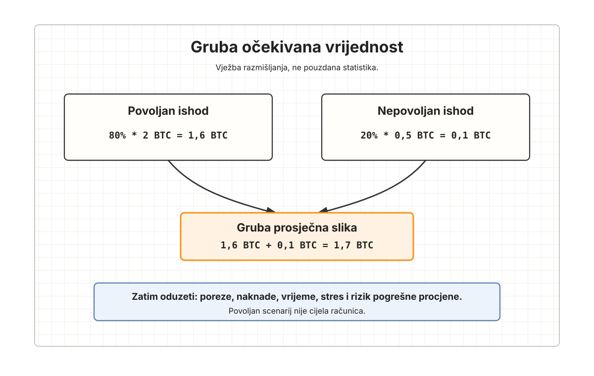
Dobra investicija nije ona u kojoj povoljan scenarij zvuči lijepo.
Dobra investicija je ona u kojoj povoljan i nepovoljan scenarij, uz vjerojatnost i usporedbu s držanjem Bitcoina, i dalje imaju smisla za vaš život.
Oportunitetni trošak vremena
Vrijeme je najvažniji resurs.
To zvuči kao opća rečenica, ali u ulaganju postaje vrlo konkretna. Svaka investicija traži vrijeme. Treba učiti područje, formulirati tezu, pronaći ulaz, provjeriti rizike, pratiti razvoj, čitati izvještaje, razgovarati s ljudima, donositi odluke, brinuti o poreznim i pravnim posljedicama, planirati izlaz i nositi emocionalni teret. To vrijeme nije besplatno.
Ako investicija nakon pet godina donese dodatni povrat u Bitcoinu, taj povrat treba usporediti s vremenom koje je uloženo.
Možda ste zaradili 0,2 BTC, ali ste potrošili 300 sati. Pitanje je koliko su vrijedila ta 300 sata u vašem primarnom poslu, vještini ili poslovnom području. Ako ste ta 300 sata mogli uložiti u posao u kojem već imate deset tisuća sati iskustva, možda biste zaradili više, uz manji rizik i manje stresa.
Čovjek koji je stručan u nekom području ima akumuliranu prednost. Njegovi novi sati u tom području često vrijede više nego sati provedeni u području u kojem je početnik. To ne znači da nikada ne treba učiti novo. Ali znači da novo područje ima cijenu. Trebat će vam više vremena za greške koje stručnjak ne bi napravio. Trebat će vam duže da prepoznate rizik. Trebat će vam više energije da razumijete kontekst.
Zato je oportunitetni trošak vremena jedan od najvažnijih filtera na Bitcoin standardu.
U fiat svijetu ljudi često precjenjuju financijski prinos i podcjenjuju život koji su potrošili da ga dobiju. Na Bitcoin standardu, gdje je novac bolji i čekanje ima veću vrijednost, vrijeme treba mjeriti strože. Investicija koja vam pojede pažnju, mir i radnu sposobnost mora dati vrlo dobar razlog zašto je vrijedna.
Ponekad će najbolja investicija biti izravno ulaganje u vlastiti posao ili vlastitu vještinu.
Ako ste obrtnik, možda nova oprema povećava prihod jasnije od dionice koju ne razumijete. Ako ste liječnik, odvjetnik, programer, dizajner, savjetnik, profesor, prodavač ili poduzetnik, možda edukacija, bolji alat, bolji sustav, bolji marketing, bolja prodaja ili bolje upravljanje vremenom donosi veći povrat od pokušaja da postanete investitor u deset tuđih područja. Ako već imate klijente, reputaciju i znanje, možda je tu vaš informacijski rub.
Vlastiti posao nije automatski najbolja investicija. I u njemu se može rasipati novac, braniti loša ideja i miješati ego s analizom. Ali često je to područje u kojem najbrže možete vidjeti stvaran povrat, jer već znate teren.
Na Bitcoin standardu ulaganje u sposobnost stvaranja vrijednosti često je ozbiljnije od potrage za sljedećom velikom prilikom.
Kada prepustiti ulaganje drugome?
Postoji i druga mogućnost.
Ako imate dovoljno štednje u Bitcoinu i želite dio izložiti proizvodnoj imovini, a nemate vremena, interesa ili prednosti da sami analizirate investicije, možda ima smisla dio tog posla prepustiti nekome tko se time profesionalno bavi. Danas je takvih mogućnosti malo, posebno ako tražimo istinski Bitcoin standard, ali s vremenom će ih vjerojatno biti više.
To nije odluka koja se nosi na reputaciji osobe ili lijepoj prezentaciji. Treba znati tko upravlja novcem, što pokušava napraviti, kako mjeri povrat u Bitcoinu, gdje se imovina stvarno drži, koliko se plaća, kakva je likvidnost, tko ima skrbništvo i što se događa u lošem scenariju. Ako netko ne može mirno i običnim jezikom objasniti kako pokušava ostvariti povrat izražen u Bitcoinu, oprez je opravdan.
Ali treba priznati i drugu stranu.
Možda je vaš sat vredniji u vlastitom poslu nego u pokušaju da postanete polovični analitičar dionica, nekretnina, fondova, tehnologije, startupa ili roba. Ako netko drugi ima duboku ekspertizu, sustav, vrijeme i disciplinu, a vi imate bolju priliku stvarati vrijednost u vlastitom području, delegiranje dijela investicijske aktivnosti može imati smisla.
Odluka nije između “sve radim sam” i “slijepo vjerujem drugome”.
Zrela odluka je razumjeti dovoljno da znate što prepuštate, zašto prepuštate i gdje su granice.
Nema žurbe
Jedna od najzdravijih posljedica Bitcoin standarda jest smanjenje žurbe.
Na državnom novcu čovjek se boji da će novac izgubiti vrijednost ako ga drži. Na Bitcoin standardu taj pritisak se smanjuje. Ako ne vidite jasnu investicijsku tezu, možete čekati. Ako ne razumijete rizik, možete učiti. Ako je prilika nejasna, možete je pustiti. Ako niste sigurni koliko vremena će vam uzeti, možete ne ulaziti. Ako vam vlastiti posao nudi jasniji povrat, možete ulagati tamo.
Uvijek će biti prilika koje su uspjele bez vas.
To nije razlog za žaljenje. Nitko ne može znati za sve prilike u svijetu. Nitko ne može biti prisutan u svakom tržištu, svakoj tehnologiji, svakoj dionici, svakoj nekretnini, svakom poslu i svakom ranom projektu. Ako svoj život mjerite svim prilikama koje niste uhvatili, živjet ćete u stalnom osjećaju propuštanja.
Vaša zadaća nije uhvatiti sve.
Vaša zadaća je koristiti vlastito vrijeme, znanje, novac i odgovornost na način koji najbolje služi vašem životu, obitelji, poslu, davanju i dugoročnom Bitcoin standardu.
To znači da ponekad investirate.
Ponekad držite Bitcoin.
Ponekad trošite Bitcoin.
Ponekad ga dajete.
Ponekad ulažete u vlastitu vještinu.
Ponekad propuštate priliku i ostajete mirni.
U tome nema proturječja ako postoji sustav.
Diverzifikacija bez raspršenosti
Diverzifikacija ima smisla kada ne možete biti sigurni u pojedinačni ishod.
Ali diverzifikacija ne smije biti izgovor za površnost. Ako uložite male iznose u deset stvari koje ne razumijete, možda niste smanjili rizik. Možda ste samo povećali broj stvari koje vam troše pažnju. S druge strane, ako imate nekoliko dobro razumljenih ulaganja, svako s jasnom tezom, veličinom pozicije, rizikom i izlazom, diverzifikacija može imati smisla.
Veličina ulaganja treba odgovarati snazi teze.
Slabija teza znači manji iznos ili čekanje. Jača teza može opravdati veći iznos, ali i dalje unutar ravnoteže imovine. Pravilo trećina iz prethodnog poglavlja ne govori da morate imati trećinu neto imovine u proizvodnoj imovini. Govori da proizvodna imovina ne bi trebala preuzeti više od trećine. Najvažnije je imati snažan novčani temelj, najmanje trećinu neto imovine u novcu, jer upravo taj novac daje opcionalnost, mir, prostor za davanje i sposobnost da investicije ne birate iz pritiska.
Brojke u ovom poglavlju služe kao obrazovni okvir knjige, a ne kao univerzalna alokacija za svaku osobu. Stvarni iznos ovisi o dobi, prihodu, obitelji, poreznom položaju, obvezama, horizontu i sposobnosti podnošenja pada.
Ako nemate jasnu investiciju, držanje Bitcoina nije neaktivnost.
To je držanje novca.
Kasnije, ako Bitcoin postane zreliji i ako njegova stopa rasta kupovne moći bude niža nego danas, ulaganja će možda lakše pobjeđivati držanje Bitcoina. To je normalno. Mlad novac koji se monetizira postavlja visoko mjerilo. Zreliji novac i dalje može čuvati kupovnu moć, ali s manjim očekivanim rastom. Tada će prag za proizvodnu imovinu biti drukčiji.
Ali dok je monetizacija još u tijeku, žurba nije vrlina.
Kako provjeriti investiciju prije odluke?
Prije nego što dio Bitcoina ili novca usmjerite u investiciju, korisno je proći jednostavan filter.
Prvo pitanje: što točno kupujem?
Ako ne možete objasniti u jednoj ili dvije jasne rečenice što kupujete, niste spremni. To nije sramota; to je znak da odluka još treba sazrijeti. “Dionica koja bi mogla rasti”, “projekt koji svi hvale” ili “prilika koja zvuči dobro” nije dovoljno. Treba znati što imovina jest, što radi i odakle bi trebala doći vrijednost.
Drugo pitanje: zašto očekujem povrat izražen u Bitcoinu?
Ako ulažete 0,1 BTC, 1 BTC ili 5 BTC, morate znati koliki povrat očekujete u Bitcoinu i zašto. Ako je povrat samo nominalan u eurima, to nije dovoljno. Na Bitcoin standardu euro može rasti ili padati u odnosu na Bitcoin. Mjerilo je Bitcoin.
Treće pitanje: koji je vremenski horizont?
Investicija bez vremenskog horizonta lako postane vječna nada. Ako očekujete da se teza pokaže za tri godine, recite zašto tri. Ako za pet, zašto pet. Ako nema jasnog roka, treba barem znati u kojim fazama provjeravate tezu.
Četvrto pitanje: gdje je Bitcoin u odnosu na dugoročni trend?
Ako je odluka veća od unaprijed određenog praga, primjerice jedne šezdesetine neto imovine, pogledajte i trend. To je obrazovni filter, ne osobno investicijsko pravilo. Ako je Bitcoin relativno nisko u odnosu na trend, investicija mora biti jača da opravda izlazak iz Bitcoina. Ako je relativno visoko, možda postoji više prostora za preusmjeravanje, ali i dalje samo uz tezu. Ako je blizu trenda, investicija se procjenjuje bez ekstremnog konteksta.
Peto pitanje: što je povoljan, a što nepovoljan scenarij?
Ne pišite samo što se događa ako uspije. Napišite što se događa ako ne uspije. Koliko Bitcoina možete izgubiti? Koliko vremena? Koliko mira? Koliko likvidnosti? Koliko reputacije? Koliko drugih prilika?
Šesto pitanje: koliko vremena traži?
Ako investicija traži 100, 200 ili 500 sati vašeg vremena, taj trošak mora biti dio računice. Koliko biste mogli zaraditi ili stvoriti da to vrijeme uložite u vlastiti posao, vještinu, klijente, obiteljsku stabilnost ili učenje koje vam izravno povećava prihod?
Sedmo pitanje: narušava li ravnotežu imovine?
Ako vas investicija gura preko razumnog udjela proizvodne imovine, ako smanjuje novčani temelj ispod sigurnog praga, ako smanjuje davanje, ako otvara potrebu za dugom ili ako stvara preveliku koncentraciju, možda iznos treba smanjiti ili odluku odgoditi.
Osmo pitanje: je li ovo investicija ili strah da propuštam priliku?
To je možda najiskrenije pitanje.
Ako biste istu investiciju mirno odbili da nitko o njoj ne govori, možda ne ulažete zbog teze, nego zbog društvenog pritiska. Ako je ne možete objasniti bez uzbuđenja, možda još nije dovoljno jasna.
Tri zamišljene situacije
Ovo poglavlje ne znači isto za svaku osobu. Ana ne treba razmišljati kao profesionalni investitor. Marko i Ivana moraju naučiti razlikovati obiteljsku investiciju od straha da zaostaju. Marin i Petra imaju najviše prilika, ali i najveću opasnost da im prilike pojedu vrijeme i ponovno zakompliciraju bilancu.
Ana: najbolja investicija bila je povećati sposobnost zarade
Ana je nakon proračuna, izlaska iz kratkoročnog duga, početka davanja i gradnje male likvidnosti prvi put imala osjećaj da može gledati malo dalje od sljedećeg mjeseca. Imala je oko 1.900 eura kratkoročne likvidnosti, 800 eura u Bitcoinu i mali mjesečni višak. Nije to bilo mnogo, ali za nju je bilo novo.
U tom trenutku počela je primjećivati različite “prilike”. Netko joj je spomenuo dionice. Netko drugi kripto projekt. Na internetu je vidjela ljude koji govore o velikim povratima. U njoj se javio poznat osjećaj: možda ponovno kasni.
Ali sada je imala sustav.
Umjesto da odmah uloži 300 eura u nešto što ne razumije, postavila je pitanje iz ovog poglavlja: ako uložim ovaj novac, što očekujem dobiti izraženo u Bitcoinu, koliko vremena moram potrošiti i razumijem li uopće rizik?
Nije imala dobar odgovor.
Zatim je pogledala vlastiti život. Na poslu je već neko vrijeme vidjela da bi mogla prijeći u bolju ulogu ako nauči raditi s određenim alatima, preuzme više administrativne odgovornosti i pokaže da može organizirati narudžbe i komunikaciju. Edukacija i certifikat koštali su 280 eura i tražili oko 40 sati rada. To nije zvučalo uzbudljivo kao tržišna investicija, ali imalo je jasniju tezu: ako joj poveća plaću za 120 eura mjesečno, povrat će biti izravan i ponavljajući.
Odlučila je uložiti u vještinu.
Šest mjeseci kasnije dobila je bolju poziciju i nešto veću plaću. Povećanje nije promijenilo cijeli život preko noći, ali je promijenilo njezin mjesečni višak. Dio povećanja išao je u Bitcoin, dio u likvidnost, dio u davanje. Tek tada je ponovno razmišljala o drugim investicijama, ali s manje pritiska.
Za Anu je lekcija bila jasna: najbolja investicija nije bila ona koja je zvučala najuzbudljivije, nego ona koja je povećala njezinu sposobnost stvaranja vrijednosti.
U njezinoj fazi života najvažniji povrat nije bio skriven na tržištu.
Bio je u njezinoj satnici.
Marko i Ivana: obiteljska investicija mora biti razumljiva obitelji
Marko je nakon stabilizacije proračuna, smanjenja duga i ponovne izgradnje Bitcoin pozicije počeo razmišljati o ulaganju dijela novca u dionice. Čitao je o kompanijama koje se bave energijom, umjetnom inteligencijom i infrastrukturom. Neke su mu se činile ozbiljne. Nije više bio impulzivan kao prije, ali je osjećao da možda propušta nešto važno ako sve drže u Bitcoinu i likvidnosti.
Ivana nije bila protiv ulaganja. Njezino pitanje bilo je jednostavno: koliko Bitcoina očekujemo natrag i koliko ćeš vremena trošiti na praćenje toga?
Marko u početku nije imao jasan odgovor.
Prije bi to možda doživio kao nepovjerenje. Sada je shvatio da je pitanje ispravno. Ako ulaže obiteljski novac, teza mora biti razumljiva obitelji. Ne mora Ivana znati svaki detalj poslovnog modela, ali mora razumjeti zašto se novac premješta iz Bitcoina ili likvidnosti u nešto drugo.
Napravili su usporedbu.
Jedna mogućnost bila je uložiti 2.000 eura u nekoliko dionica koje Marko još nije dovoljno razumio. Druga je bila uložiti dio novca u Markovu dodatnu edukaciju i alat koji bi mu mogao otvoriti bolju poziciju ili dodatni prihod. Treća je bila ostaviti novac u Bitcoinu i nastaviti jačati likvidnost. Četvrta je bila manji iznos staviti u dionice kao učenje, ali ne kao ozbiljnu obiteljsku alokaciju.
Odlučili su kombinirati. Mali iznos za učenje, bez velikog rizika. Veći dio u Bitcoin i likvidnost. Dio u Markovu edukaciju. To nije bila dramatična odluka, ali bila je dobra jer je odgovarala njihovom stvarnom životu.
Nakon godinu dana Marko je shvatio da aktivno praćenje dionica uz posao, djecu i obiteljske obveze traži više vremena nego što je mislio. Nije prestao učiti, ali nije povećao ulaganje. Vidio je da njihova obitelj u ovoj fazi više dobiva od povećanja prihoda i stabilnosti nego od pokušaja da on postane poluprofesionalni investitor.
To nije značilo da su dionice loše.
Značilo je da njihovo vrijeme, znanje i obiteljski ritam imaju cijenu.
Marin i Petra: prilika koja nije pobijedila vrijeme
Marin i Petra imali su najviše imovine i najviše investicijskih mogućnosti. Nakon što su smanjili dug, uredili bilancu i jasnije definirali Bitcoin, počele su im dolaziti ponude: poslovni udjeli, nekretninski projekti, privatna ulaganja, tehnološke firme, fondovi, partnerstva. Marin je imao prirodan poduzetnički instinkt i znao je prepoznati mogućnosti. Petra je bila trezvenija i češće pitala što će im takva prilika učiniti životu.
Jedna konkretna prilika izgledala je posebno zanimljivo. Poznanik je pokretao poslovni projekt s dobrim timom i rastućim tržištem. Povrat u državnom novcu mogao je biti velik. Marin je mogao uložiti dio Bitcoina ili dio poslovne likvidnosti. Na papiru je projekt imao smisla.
Petra je tražila da ga procijene u Bitcoinu.
Koliko Bitcoina ulažu? Koliko Bitcoina očekuju natrag? U kojem roku? Što se događa ako Bitcoin sam nastavi rasti prema dugoročnom trendu? Koliko sati će Marin morati posvetiti projektu? Što se događa ako tim treba njegovu pomoć više nego što sada kažu? Može li isti iznos vremena i pažnje Marin uložiti u postojeći posao i dobiti jasniji povrat?
Kada su sve zapisali, projekt je izgledao manje očito.
Povoljan scenarij bio je dobar. Nepovoljan scenarij značio je gubitak značajnog dijela uloženog Bitcoina i barem 150 sati Marinove pažnje. Tih 150 sati u njegovom postojećem poslu moglo je vjerojatno donijeti više vrijednosti, s manje informacijskog rizika. Marin je shvatio da ga prilika privlači djelomično zato što je nova, a ne zato što je bolja.
Odlučio je ne ući velikim iznosom.
Umjesto toga, uložio je manji iznos kao učenje i odnos, uz jasnu granicu. Veći dio kapitala usmjerio je u poboljšanje postojećeg poslovnog sustava: bolju naplatu, bolji prodajni proces, alat koji smanjuje vrijeme izvedbe i osobu koja preuzima dio operativnog posla. Povrat nije bio spektakularan za pričanje, ali je bio stvaran. Posao je postao profitabilniji i manje ovisan o njegovom stalnom radu.
Za Marina i Petru ulaganje na Bitcoin standardu nije značilo izbjegavati rizik. Značilo je da rizik mora biti dovoljno dobro razumljen da zasluži Bitcoin, vrijeme i pažnju.
To im je postao novi prag.
Zaključak
Bitcoin kroz vrijeme traži drukčiji odnos prema cijeni, volatilnosti i ulaganju.
Cijena je važna, ali nije zapovijed. Volatilnost je stvarna, ali nije presuda. Dugoročni trend može biti koristan okvir, ali nije kristalna kugla.
Bitcoin oslobađa čovjeka od prisile da stalno bježi iz novca. Zato ulaganje mora zaslužiti svoje mjesto. Povrat se ne mjeri samo u eurima, nego u Bitcoinu, vremenu, pažnji i miru koji odluka traži. Ako tezu ne možete jasno izgovoriti, čekanje nije pasivnost. Može biti najmudriji oblik discipline.
Na kraju, cijena i trend ne smiju govoriti glasnije od života. Plaća, proračun, dug, davanje, djeca, posao, obiteljski razgovor i sigurnost i dalje su stol na kojem se odluka donosi.
Tek tada možemo prijeći na posljednje praktično pitanje drugog dijela knjige: kako čuvati ono što smo odlučili držati i kako taj sustav prenijeti obitelji.
Kada je ovo poglavlje provedeno?
Ovo poglavlje je provedeno kada cijena više nije zapovijed.
Obvezno:
- Razumijete razliku između današnje cijene, dugoročnog trenda i odstupanja od trenda.
- Znate približno izračunati odstupanje u postotku:
(tržišna cijena - trend) / trend. - Znate što znači kada je Bitcoin iznad, ispod ili blizu trenda.
- Razumijete da "iznad trenda" nije nalog za prodaju, a "ispod trenda" nije nalog za kupnju.
- Koristite isti unaprijed odabrani i datirani model, a ne trend koji najbolje opravdava današnju želju.
- Za veće odluke koristite prag, primjerice jednu šezdesetinu neto imovine, prije dodatne provjere trenda.
- Ne koristite potencijski zakon kao dozvolu za dug, polugu ili nered.
- Investicije mjerite prema Bitcoinu, ne samo prema euru.
- Razumijete da veći očekivani povrat zahtijeva veću toleranciju na rizik i bolji sustav.
- Ulaganje dolazi tek nakon proračuna, izlaska iz duga, davanja i ravnoteže imovine.
- Nijedna odluka o Bitcoinu ne koristi dug, polugu ili novac koji već ima drugi zadatak.
Izborno, ali korisno:
- Razumijete da block-time okvir koristi
h = visina bloka / 210 000, ali da vaš proračun i obitelj i dalje žive u kalendarskim mjesecima. - Razumijete zašto se mogu uspoređivati days-since-genesis modeli i block-based modeli.
- Razumijete da R² mjeri povijesno uklapanje modela, često na log-transformiranim podacima, a ne sigurnost budućeg ishoda.
- Razumijete vremenski odmak: ispred trenda, blizu trenda ili iza trenda nije zapovijed za kupnju ili prodaju.
Ne idite dalje ako…
Ne idite dalje ako vam je dugoročni trend postao izgovor za kratkoročni nered. Ne idite dalje ako kupujete zato što se bojite da kasnite, prodajete zato što ne možete podnijeti pad ili ulažete zato što vam je dosadno čekati.
Ne idite dalje ako svaki put tražite novi graf koji potvrđuje ono što već želite napraviti. Ne idite dalje ako visok R² čujete kao jamstvo, ako "ispod trenda" čujete kao nalog za kupnju ili ako "iznad trenda" čujete kao nalog za prodaju.
Ne idite dalje ako investiciju ne možete izraziti u Bitcoinu. Ako znate samo priču, ali ne znate koliko Bitcoina ulažete, koliko očekujete natrag, u kojem roku i uz koji nepovoljan scenarij, još nemate tezu. Imate dojam.
Ne idite dalje ako cijena govori glasnije od proračuna. Tada problem nije tržište. Problem je stanje iz kojeg gledate tržište.
Ovo poglavlje je provedeno kada volatilnost čitate iz uređenog stanja, a ne iz panike, pohlepe ili potrebe da se preskoči redoslijed.